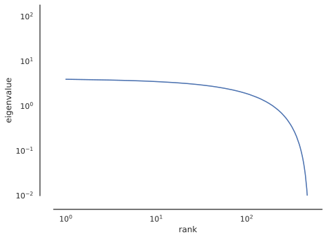

Install all required dependencies
%pip install git+https://github.com/BonnerLab/ccn-tutorial.gitHere’s a link to this notebook on Google Colab.
%pip install git+https://github.com/BonnerLab/ccn-tutorial.gitfrom collections.abc import Sequence
import functools
import warnings
from typing import NamedTuple
import numpy as np
import pandas as pd
import xarray as xr
import seaborn as sns
import matplotlib as mpl
from matplotlib import pyplot as plt
from matplotlib_inline.backend_inline import set_matplotlib_formats
import ipywidgets as widgets
from IPython.display import display
from utilities.brain import load_dataset%matplotlib inline
sns.set_theme(
context="notebook",
style="white",
palette="deep",
)
set_matplotlib_formats("svg")
pd.set_option("display.max_rows", 5)
pd.set_option("display.max_columns", 10)
pd.set_option("display.precision", 3)
pd.set_option("display.show_dimensions", False)
xr.set_options(display_max_rows=3, display_expand_data=False)
warnings.filterwarnings("ignore")random_state = 0
rng = np.random.default_rng(seed=random_state)Even random matrices have some covariance structure that result in non-zero eigenvalues (distributed as Marchenko-Pastur). This makes it difficult to infer anything about the reliability/significance of the dimension from the magnitude of the eigenvalue – especially when the eigenvalues are “close to zero” – which is the typical approach in the field.
def simulate_marchenko_pastur(
n_stimuli: int = 500,
n_neurons: int = 500,
n_repetitions: int = 50,
) -> np.ndarray:
data = rng.standard_normal((n_repetitions, n_stimuli, n_neurons))
data -= data.mean(axis=-2, keepdims=True)
singular_values = np.linalg.svd(data, compute_uv=False)
return (
xr.DataArray(
name="eigenvalue",
data=singular_values**2 / (n_stimuli - 1),
dims=("repetition", "rank"),
coords={"rank": ("rank", 1 + np.arange(singular_values.shape[-1]))},
)
.to_dataframe()
.reset_index()
)
def view_marchenko_pastur(eigenvalues: xr.DataArray, *, log: bool = False) -> None:
fig, ax = plt.subplots()
sns.lineplot(
ax=ax,
data=eigenvalues,
x="rank",
y="eigenvalue",
estimator="mean",
errorbar="sd",
err_style="band",
)
if log:
ax.set_xscale("log")
ax.set_yscale("log")
ax.set_ylim(bottom=1e-2)
sns.despine(ax=ax, offset=20)
fig.show()
eigenvalues = simulate_marchenko_pastur()
view_marchenko_pastur(eigenvalues)
view_marchenko_pastur(eigenvalues, log=True)

In a whole-brain calcium-imaging study where mice viewed 2,800 natural images while neural responses were recorded, Stringer et al. (2021) developed cross-validated PCA (CV-PCA) as a method to reliably estimate the covariance structure of the neural responses. Since each image was viewed twice, these repetitions could be used as train/test splits to estimate covariance eigenvalues. Specifically, eigenvectors are computed on a training set of data, and cross-validated eigenvalues are computed by computing the covariance between two independent sets of data:
X_\text{train}^\top X_\text{train} / (n - 1) = V \Lambda V^\top
\Lambda_\text{test} = \left( X_\text{train} V \right) ^\top \left( X_\text{test} V \right) / (n - 1)
These cross-validated eigenvalues represent the covariance reliably shared across two presentations of the visual stimulus – which is a quantity we are interested in as neuroscientists: what is the “stable” part of the visual representation of a natural image? Notably, these “eigenvalues” need not be positive: if there is no shared covariance between the two systems at a rank, the expected value of the eigenvalue is 0.
Let’s apply CV-PCA to our fMRI data to see what it looks like!
data = load_dataset(subject=0, roi="general")
display(data)<xarray.DataArray 'fMRI betas' (presentation: 1400, neuroid: 15724)>
[22013600 values with dtype=float32]
Coordinates: (3/8)
x (neuroid) uint8 ...
y (neuroid) uint8 ...
... ...
rep_id (presentation) uint8 ...
Dimensions without coordinates: presentation, neuroid
Attributes: (3/7)
resolution: 1pt8mm
preprocessing: fithrf_GLMdenoise_RR
... ...
citation: Allen, E.J., St-Yves, G., Wu, Y. et al. A massive 7T fMRI...Note that the data contain fMRI responses to two repetitions of each image.
class PLSSVD:
def __init__(self) -> None:
self.left_mean: np.ndarray
self.right_mean: np.ndarray
self.left_singular_vectors: np.ndarray
self.right_singular_vectors: np.ndarray
def fit(self, /, x: np.ndarray, y: np.ndarray) -> None:
self.left_mean = x.mean(axis=-2)
self.right_mean = y.mean(axis=-2)
x_centered = x - self.left_mean
y_centered = y - self.right_mean
n_stimuli = x.shape[-2]
cross_covariance = (np.swapaxes(x_centered, -1, -2) @ y_centered) / (
n_stimuli - 1
)
(
self.left_singular_vectors,
self.singular_values,
self.right_singular_vectors,
) = svd(
torch.from_numpy(cross_covariance),
n_components=min([*x.shape, *y.shape]),
truncated=True,
seed=random_state,
)
n_stimuli = data.shape[-2]
self.left_singular_vectors = self.left_singular_vectors.cpu().numpy()
self.singular_values = self.singular_values.cpu().numpy()
self.right_singular_vectors = self.right_singular_vectors.cpu().numpy()
def transform(self, /, z: np.ndarray, *, direction: str) -> np.ndarray:
match direction:
case "left":
return (z - self.left_mean) @ self.left_singular_vectors
case "right":
return (z - self.right_mean) @ self.right_singular_vectors
case _:
raise ValueError("direction must be 'left' or 'right'")
def bin_logarithmically(
data: Sequence[int | float],
*,
base: int = 10,
points_per_bin: int,
min_: int | float,
max_: int | float,
) -> Sequence[float]:
n = points_per_bin * int(np.ceil((np.log(max_) - np.log(min_)) / (np.log(base))))
bin_edges = np.geomspace(min_, max_, num=n)
bin_centers = np.exp(np.log(bin_edges)[:-1] + np.diff(np.log(bin_edges)) / 2)
bin_edges[-1] = np.inf
labels = bin_centers[np.digitize(data, bin_edges) - 1]
return labels
# data_repetition_1 = data.isel({"presentation": data["rep_id"] == 0})
# data_repetition_2 = data.isel({"presentation": data["rep_id"] == 1})
# data_repetition_1 = data_repetition_1.sortby("stimulus_id")
# data_repetition_2 = data_repetition_2.sortby("stimulus_id")
# assert np.array_equal(
# data_repetition_1["stimulus_id"].values, data_repetition_2["stimulus_id"].values
# )
# plssvd = PLSSVD()
# plssvd.fit(
# data_repetition_1.values,
# data_repetition_1.values,
# )
# rep_1_transformed = plssvd.transform(data_repetition_1.values, direction="left")
# rep_2_transformed = plssvd.transform(data_repetition_2.values, direction="right")
# n_neurons_1 = rep_1_transformed.shape[-1]
# cv_spectrum = np.diag(
# np.cov(rep_1_transformed, rep_2_transformed, rowvar=False)[
# :n_neurons_1, n_neurons_1:
# ]
# )
# cv_spectrum = pd.DataFrame(
# cv_spectrum, columns=["cross-validated singular value"]
# ).assign(rank=np.arange(len(cv_spectrum)) + 1)
# cv_spectrum = cv_spectrum.assign(
# bin=bin_logarithmically(
# cv_spectrum["cross-validated singular value"],
# points_per_bin=5,
# min_=1,
# max_=10_000,
# )
# )
# fig, ax = plt.subplots()
# sns.lineplot(ax=ax, data=cv_spectrum, x="rank", y="cross-validated singular value")
# sns.despine(ax=ax, offset=20)
# fig, ax = plt.subplots()
# sns.lineplot(ax=ax, data=cv_spectrum, x="rank", y="cross-validated singular value")
# ax.set_xscale("log")
# ax.set_yscale("log")
# ax.set_ylim(bottom=1e-3)
# sns.despine(ax=ax, offset=20)
# fig, ax = plt.subplots()
# sns.lineplot(
# ax=ax,
# data=cv_spectrum.groupby("bin").mean().rename(columns={"bin": "rank"}),
# x="rank",
# y="cross-validated singular value",
# ls=None,
# marker="o",
# )
# ax.set_xscale("log")
# ax.set_yscale("log")
# sns.despine(ax=ax, offset=20)